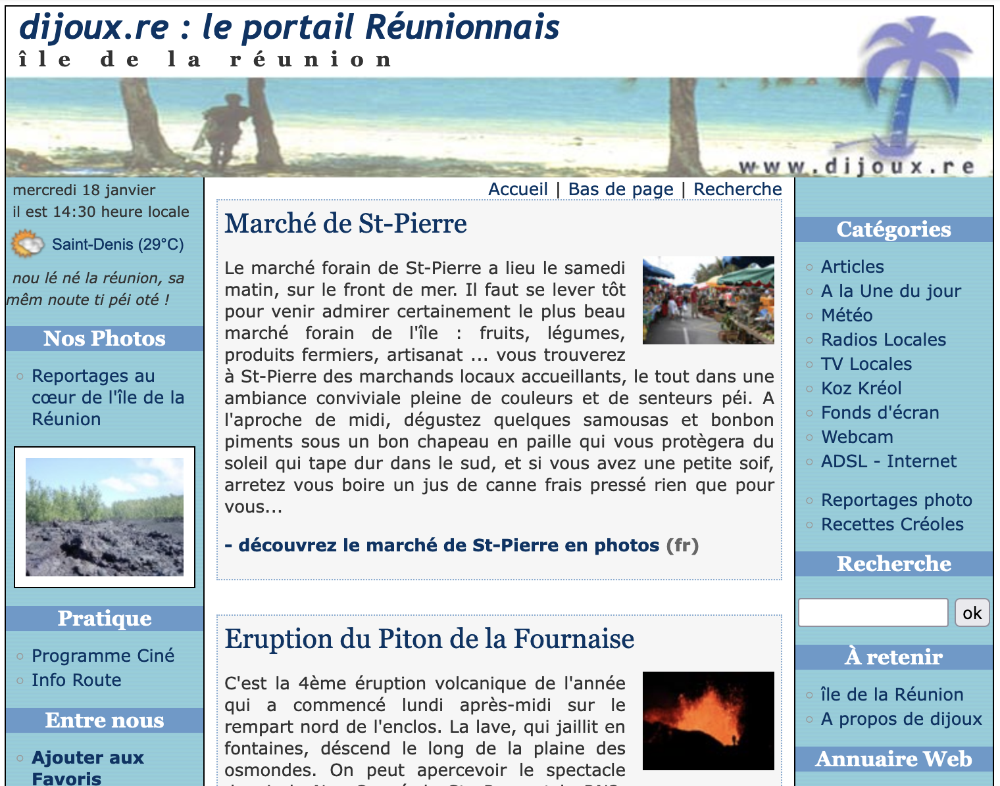

Peut-être cet article vous semblera être une suite de répétitions. Je vais à nouveau parler de blogs, de clicanoo et de dijoux.re. Ce printemps, j'ai découvert quelques nouveauté sur ces sites, des nouveautés « blog ». Dijoux.re est devenu un portail d'actualité efficace et il est aujourd'hui géré comme un blog grâce à dotclear. Cela fait maintenant 5 ans qu'il est mis à jour régulièrement et deux ans qu'il arbore fièrement un nom de domaine en .re de la Réunion.

Clicanoo a emboîté le pas du .re l'année dernière. Non pas pour son site principal, mais pour une nouvelle plate-forme de blogs où tout réunionnais peut y créer ses pages. Clicablog.re était fermé en janvier 2006 parce que trop spammé. Rouverte en mai, la plate-forme n'est pas la préférée des internautes parce au'il n'est pas possible de vraiment personnaliser ses pages.
Devant le manque de succès des blogs réunionnais ouverts à cette adresse, clicanoo a jeté l'éponge et s'est recentré sur son journal en ligne. N'est pas skyblog qui veut.
Les blogs amateurs continuent de s'ouvrir et il en est un qui a décidé de les relier. La Réunion des blogs de la Réunion est un webring des blogs sur ce thème. Le concept d'anneau de sites thématiques est un concept assez ancien (pour le web) mais plutôt cool. Il est hélas pas assez porteur et hype pour avoir survécu.